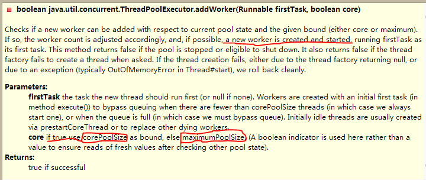

多线程[2]-线程池
首先我们从最主要的类：ThreadPoolExecutor开始,主要的方法就是JDK文档，最为准确和清洗。
An ExecutorService that executes each submitted task using one of possibly several pooled threads, normally configured using Executors factory methods.
线程池执行提交的任务，这个是基本的功能，几种不同的线程池都是通过 Executors 通过工程的模式创建的。
ExecutorService pool = Executors.newCachedThreadPool();
ExecutorService pool1 = Executors.newFixedThreadPool(10);
ExecutorService pool2 = Executors.newScheduledThreadPool(10);
ExecutorService pool3 = Executors.newSingleThreadExecutor();
从源代码中可以知道，新建的这几种线程池，归根到底就是调用的这个构造函数，只是参数的不同：
public ThreadPoolExecutor(int corePoolSize,
int maximumPoolSize,
long keepAliveTime,
TimeUnit unit,
BlockingQueue<Runnable> workQueue) {
this(corePoolSize, maximumPoolSize, keepAliveTime, unit, workQueue,
Executors.defaultThreadFactory(), defaultHandler);
}
Thread pools address two different problems: they usually provide improved performance when executing large numbers of asynchronous tasks, due to reduced per-task invocation overhead, and they provide a means of bounding and managing the resources, including threads, consumed when executing a collection of tasks. Each ThreadPoolExecutor also maintains some basic statistics, such as the number of completed tasks.
这段话，我们就关注两条1，线程池是如何减少调用每一个线程的开销的（reduced per-task invocation overhead）2，对线程池里面线程的管理（a means of bounding and managing the resources）
Core and maximum pool sizes A ThreadPoolExecutor will automatically adjust the pool size (see getPoolSize()) according to the bounds set by corePoolSize (see getCorePoolSize()) and maximumPoolSize (see getMaximumPoolSize()). When a new task is submitted in method execute(java.lang.Runnable), and fewer than corePoolSize threads are running, a new thread is created to handle the request, even if other worker threads are idle. If there are more than corePoolSize but less than maximumPoolSize threads running, a new thread will be created only if the queue is full. By setting corePoolSize and maximumPoolSize the same, you create a fixed-size thread pool. By setting maximumPoolSize to an essentially unbounded value such as Integer.MAX_VALUE, you allow the pool to accommodate an arbitrary number of concurrent tasks. Most typically, core and maximum pool sizes are set only upon construction, but they may also be changed dynamically using setCorePoolSize(int) and setMaximumPoolSize(int).
这个就要就是交代线程池的运行的原理了,在我看来我是没有很踏实的理解，需要结合源码看清楚：
// 线程池中提交一个任务的主要的逻辑
public Future<?> submit(Runnable task) {
if (task == null) throw new NullPointerException();
//新建了一个RunableFuture 扩展 Runnable, Future<V>
RunnableFuture<Void> ftask = newTaskFor(task, null);
execute(ftask);
return ftask;
}
从新建的TaskFor的这个方法可以看到，线程池中为每一个线程外面又重新包转了一层，这一层就是RunnableFuture接口 对应的实现类：FutureTask，从下面的方法，也能够看到：
public FutureTask(Callable<V> callable) {
if (callable == null)
throw new NullPointerException();
this.callable = callable;
this.state = NEW; // ensure visibility of callable
}
public FutureTask(Runnable runnable, V result) {
//有Runnable 和 result 适配出一个Callable的接口
this.callable = Executors.callable(runnable, result);
this.state = NEW; // ensure visibility of callable
}
然后封装了一个线程，然后开始执行：executor(ftask) 这个方法：
public void execute(Runnable command) {
if (command == null)
throw new NullPointerException();
int c = ctl.get();
if (workerCountOf(c) < corePoolSize) {
if (addWorker(command, true))
return;
c = ctl.get();
}
if (isRunning(c) && workQueue.offer(command)) {
int recheck = ctl.get();
if (! isRunning(recheck) && remove(command))
reject(command);
else if (workerCountOf(recheck) == 0)
addWorker(null, false);
}
else if (!addWorker(command, false))
reject(command);
}
ctl.get(),其中ctl这个量是一个标志量，控制线程池的的一个主要的量，使用bit表示：
private final AtomicInteger ctl = new AtomicInteger(ctlOf(RUNNING, 0));
其中RUNNING是： private static final int RUNNING = -1 « COUNT_BITS; COUNT_BITS 为29
也就是：
// 1110 0000 0000 0000 0000 0000 0000 0000
使用高位来表示运行着，这种状态，然后使用 workerCountof() 位运算表示正在线程池中跑着的线程：
private static int workerCountOf(int c) {
return c & CAPACITY;
}
我们就可以推断出CAPACITY 就是0001 1111 1111 1111 1111 1111 1111 1111 采用的是且的运算方式，所以 我们得到的是ctl的后29位数值，可以用来表示线程池中跑着的线程数。
代码的第一种情况是：if (workerCountOf(c) < corePoolSize) {
这就话就是说，如果线程池中的线程数少于 corePoolSize的话，直接的增加任务addWorker（command，true）
首先我们还要看一下 addWorker的说明，然后看看里面的逻辑，线程池增加了一个任务，具体都做了什么？
 第一个参数表示执行的任务，第二个参数比较边界的选择，是CorePoolsize 还是max 那个值。如果线程池的状态可以，也就是说 能够创建线程，并且线程池没有关闭，运行的线程数小于corePoolSize，那么启动第一个参数代表的线程。
具体的代码是： 代码比较的长，我们只关注比较核心的代码
private boolean addWorker(Runnable firstTask, boolean core) {
retry:
for (;;) {
int c = ctl.get();
int rs = runStateOf(c);
..........
//①这个地方把c的值加一，也就是说代表运行的线程加一
if (compareAndIncrementWorkerCount(c))
break retry;
c = ctl.get(); // Re-read ctl
if (runStateOf(c) != rs)
continue retry;
// else CAS failed due to workerCount change; retry inner loop
}
}
boolean workerStarted = false;
boolean workerAdded = false;
Worker w = null;
try {
//使用锁
final ReentrantLock mainLock = this.mainLock;
//创建一个新的任务，这个Worker，比较的有意思，后面我们再说
w = new Worker(firstTask);
final Thread t = w.thread;
if (t != null) {
mainLock.lock();
try {
// Recheck while holding lock.
// Back out on ThreadFactory failure or if
// shut down before lock acquired.
int c = ctl.get();
int rs = runStateOf(c);
if (rs < SHUTDOWN ||
(rs == SHUTDOWN && firstTask == null)) {
if (t.isAlive()) // precheck that t is startable
// 线程运行中，意思就是说被启动，但是没有结束，处于Alive的状态
throw new IllegalThreadStateException();
workers.add(w);
int s = workers.size();
if (s > largestPoolSize)
largestPoolSize = s;//更新现在线程池中线程的个数
workerAdded = true;
}
} finally {
mainLock.unlock();
}
if (workerAdded) {
t.start();//添加成功后，直接的运行线程②
workerStarted = true;
}
}
} finally {
if (! workerStarted)
addWorkerFailed(w);//线程启动失败③
}
return workerStarted;
}
看到这里面，我们基本能够理解 JAVADOC中的一句话了：** When a new task is submitted in method execute(java.lang.Runnable), and fewer than
corePoolSize threads are running, a new thread is created to handle the request, even if
other worker threads are idle. **
> 那么这个时候，会有一个疑问：如果当前的情况下，小于corePoolSize，线程直接新建Worker，直接执行，但是线程执行完毕以后，又是如何通知线程池：我执行完毕了，线程池的正在运行的线程要减一？
因为，在这里我只看见 ： t.start() 这句话。 这个问题，现遗留着，后面我们在回答。